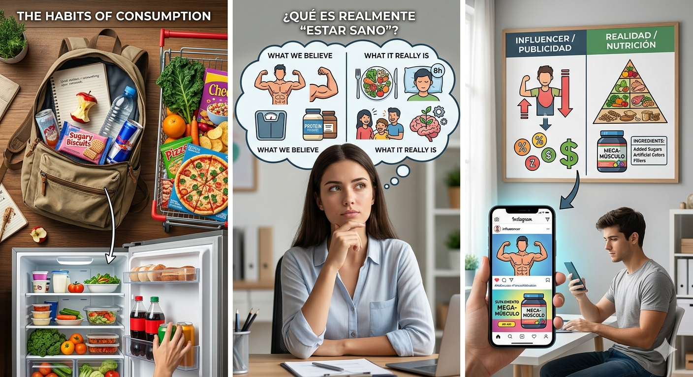

El Espejo de mis ideas
Antes de nada, vamos a mirar qué hay en nuestra mochila, recordar qué compramos cuando vamos al supermercado, qué es lo primero que suelo comer cuando tengo hambre y abro el frigorífico. Piensa y reflexiona: ¿Qué crees que es realmente "estar sano"?

Por otra parte, seguro que sigues a un influencer de fitness, o de moda, o estética, en tus redes sociales: ¿Es lo que dice ese influencer de fitness o lo que ves en la publicidad de suplementos? Influencers de todo pelaje difunden incontables falsedades relacionadas con el agua, la fruta, el orden de las comidas o el adelgazamiento. Repasamos algunas y explicamos por qué son mentira. Fruta que fermenta en el estómago. Verduras que no nutren. Trigos tóxicos “porque tienen ocho moléculas de gluten”. Sales con poderes mágicos. Agua del grifo que te altera las hormonas… y te predispone a la homosexualidad. Parecen burradas que nadie creería, pero son ejemplos reales de bulos sobre la alimentación que circulan por las redes, y que acumulan millones de visualizaciones, comparticiones y likes. ¿Quién los propaga? La mayoría de ellos, influencers o “creadores de contenido” sin demasiada formación nutricional. ¿Qué consiguen con ello? Sembrar la alarma, aumentar su audiencia y, muy probablemente, vender alguna alternativa o remedio del que sacan beneficio económico. Si quieres conocer algunas de las falsedades más peligrosas que difunden, y lo que dice de verdad la evidencia científica sobre ellas, mira el vídeo de arriba.
Observa el siguiente vídeo: Los peores bulos sobre comida que corren por las redes | EL COMIDISTA
Empezaremos detectando qué sabemos (y qué creemos saber) sobre alimentación saludable.